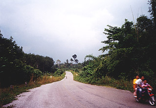
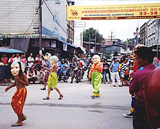

Sent: 30 Nov 1999 11:00 GMT
web version, with
|
|
| Prior Trav-E-Log: Thai 2 | Krabi is ... students... |
(Note:) This is the 10th in a series of Trav-E-Logs sent while traveling in S.E.Asia between Oct 16, 1999 and Jan 22, 2000.
| Hi folks,
The last full day in Thailand started with a stroll through Krabi, breakfast at the market, and a stop at an Internet café where the Thai2 newsletter was written. Lunch consisted of Roti with Curry, lots of papaya, and a few mangosteins. The bookstore did not want to rent out a bike because of the Loy Krathong holiday, but the Mountain Bike Shop was happy to take 50 baht for 6 hours. Even though Krabi is the size of a small town, it is the seat of the provincial government, and a focal point for the New Years celebration, with all the noise, commotion, and traffic one would expect when the population expands 10-fold for the festivities. The ride out of town leaves it all behind. Investigating a few side roads along the way, I finally head for a National Park and waterfall some 20 KM away, as just enough signage is in roman characters to follow the crude map. About 7 KM out of town, on the road, which ends at the park, two students point me towards the detour around a washed out bridge. This path takes me across a small bridge only wide enough for motorbikes to cross in one direction at a time. This confirms earlier information that "you can't take car - you must rent motorbike." The mountain bike is perfect in every respect. The road winds along small rubber tree, palm oil, and fruit tree plantations, with a generous number of coconut palms, banana, and papaya trees planted wherever a shack or living quarter is seen. I take pictures of many of these sights, including those I don't quite understand. When I stop to take a picture of a rack of poles filled with off-white mats set out to dry, a farmer, probably in his fifties, invites me in for a drink. I graciously refuse, but confirm these latex like mats are one of the stages in rubber production. Now if only I could remember that film clip from elementary school which explained the rubber making process in SE Asia . . . Many of the oil palm trees have fern like plants, and occasionally orchids, growing from the trunks, sometimes all the way up to the palm leaves. Some of the rubber tree cups are full, others are empty, and some of the rubber tree plantations appear abandoned. One of the palm trees has a string of green, golf ball sized fruit growing around the trunk. The palms are shorter on these trees than on coconut palms. The jackfruit grows on a tree similar in appearance to a southern magnolia. As this is the start of the dry season, only notice about 15 or 20 plants in bloom. Just imagine what it must be like at the start of the rainy season! This part of Thailand is known for the many strange limestone outcroppings, in otherwise rather flat terrain. These outcroppings may tower up to 1000 feet, with walls so shear, little vegetation can get a foothold. The tops of the formations are heavily forested, but the lack of huge trees tells me they are probably not virgin forests. Caves with large openings are abundant, with many of the stalactites and stalagmites visible from outside the caves. My road passes by several typical outcroppings. As I bike along the road, everyone you pass either on motor bike, standing near the road's edge, or at the many gathering places, smiles and calls out "hello." When I wave at an oncoming motorbike containing one to four people, they smile back and toot the horn in acknowledgment. And I feel sad I have only spent a week in Thailand. At a crossroad store next to a police station, I stop for a snack and cold drink. They tell me it's 9 KM to the beautiful park, but are rather pre-occupied making float boats to sell for the big celebration in Krabi tonight. These are slices of Banana plant stalks dressed in banana leaf, flowers, candle, and of course the required incense sticks. I will buy one that evening for 20 baht, add two sparklers, and send it off downstream and out to sea with my troubles of the past year. What a great concept! Another 4 or 5 KM down the road, I notice the hills in the distance are covered in dark clouds. This is not a good sign, but I push onwards. When the wind kicks up, the hills are totally obscured, so I turn the bike around, probably 2 KM short of the park. It's only 3:30, but already I've had a wonderful day, and the cool tailwind is refreshing. Arriving back in Krabi, the traffic is backed up for miles. No rain has fallen to dampen the festivities. When I can't ride the bike, I pick it up and carry it through the crowds, making my way towards the center of town. The road has been blocked for a parade in progress, complete with floats, marching bands, Thai dancers, and representatives from 6 countries: China, Russia, Yugoslavia, Japan, Israel, and Italy. After returning the bike to the now closed shop, showering, and eating dinner, travel plans are finalized with payment of bus fare to Kuala Lumpur, Malaysia. Now it's time to re-join the Loy Krathong celebration, and make my way down towards the dance stage. May be awhile before I have access again. Don't give up . . . . Bill |
 
|